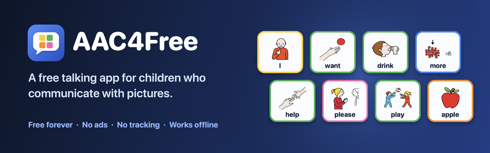
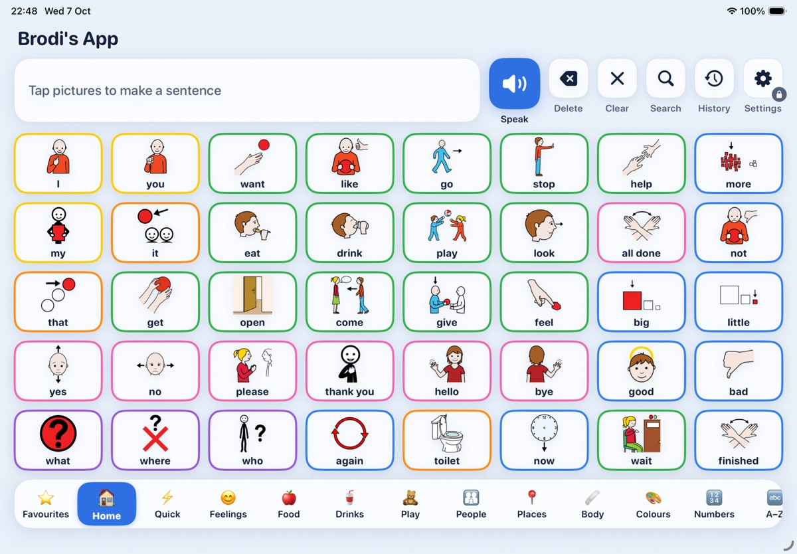

AAC4Free: talk with pictures
A free AAC app for iPad, made for autistic children and anyone who communicates with pictures. No adverts, no subscriptions, no tracking.

Contact and support
If you need help, find a problem or have an idea, please email localsparksonline@gmail.com. Tell us which iPad you have and what you were trying to do, and we'll get back to you as soon as we can.
Common questions
| Open the grown-up settings | Touch and hold the Settings button (top right) for 2 seconds, then answer the simple sum. |
| Get a better voice | Settings → Voice, then follow the steps to download Apple's free premium voices. |
| Help with accidental taps | Settings → Touch and switches. |
| Use switches | Settings → Switch scanning. |
| Add another child | Settings → Child → Add a child. |
| Change the word level | Settings → Word level. |
| Find more symbols | Edit a card → Choose a picture symbol → Online library. |
| Print boards | Settings → Print boards. |
| Share progress with a therapist | Settings → Word log and progress. |
| Move to a new iPad | Settings → Back up boards and photos. |
| Keep your child in the app | Use iPadOS Guided Access (iPad Settings → Accessibility). |
Which iPads?
AAC4Free runs on iPadOS 15 and later, so older and second-hand iPads work too, including the iPad mini 4 and iPad Air 2.

Free, for good
The leading AAC apps cost hundreds of pounds. AAC4Free was made so that every child can have a voice, whatever their family can afford. It will always be free, with no in-app purchases.